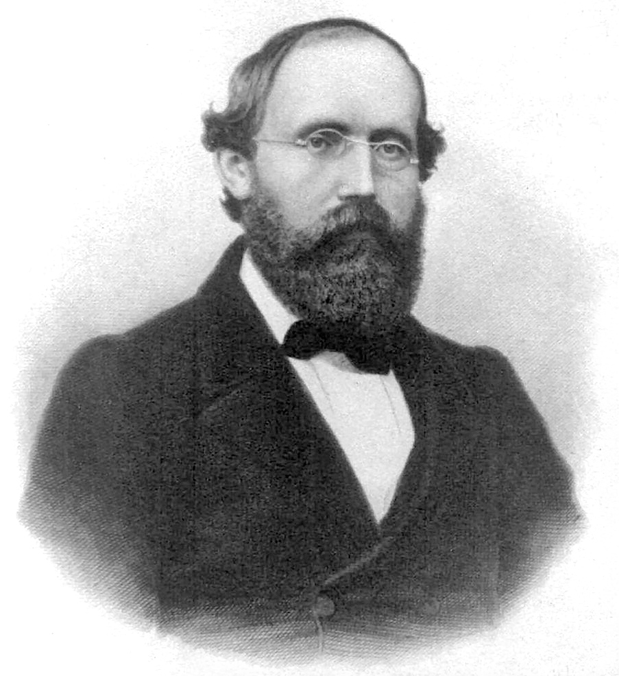

Calculus was invented twice in the seventeenth century, by Isaac Newton in the 1660s (the method of fluxions) and by Gottfried Wilhelm Leibniz, who published the first account of the differential calculus in 1684. For more than a century afterwards it was used with spectacular success and very little foundation: infinitesimals were quantities that were zero when convenient and nonzero when convenient. Bishop Berkeley's 1734 jibe about "the ghosts of departed quantities" was never properly answered by the inventors. The answer came in the nineteenth century, through the work of Bolzano (1817), Cauchy (Cours d'analyse, 1821), Riemann (1854), Weierstrass (lectures in Berlin from the 1860s), Dedekind and Cantor (1872), and finally Lebesgue (1902). That rigorous reconstruction is what is now called real analysis, and it is the subject of this course.
An introductory calculus course computes derivatives and areas with the standard rules and derives a few of them. This course asks the questions that come next. What exactly is a real number, and which property of the real numbers makes calculus work? What does it mean for an infinite sum to have a value, and why can rearranging its terms change that value? When may two limiting processes be interchanged? Exactly which functions have an integral, and why did Riemann's integral eventually have to be replaced? Every theorem is stated precisely, and most are proved. The proofs are short, but each one uses completeness, compactness or uniformity in a specific way, and seeing where these enter is the real content of the subject.
Prerequisites: fluency with the computational calculus of one variable (derivatives, antiderivatives, standard series), basic linear algebra (linear maps, matrices, determinants), and comfort reading proofs by contradiction and induction. Notation: ℕ = {1, 2, 3, ...}, ℚ is the rational numbers, ℝ the real numbers; "iff" means "if and only if"; ∀ means "for all" and ∃ means "there exists".
In this course, you will:
- 1.Characterise ℝ as the complete ordered field and derive the equivalent forms of completeness
- 2.Prove the main theorems on sequences: monotone convergence, Bolzano–Weierstrass, the Cauchy criterion, lim sup and lim inf
- 3.Develop the convergence theory of infinite series, including the root, ratio and condensation tests and Riemann's rearrangement theorem
- 4.Work with ε–δ limits, continuity and uniform continuity, and prove the intermediate and extreme value theorems
- 5.Prove the mean value theorem, Darboux's theorem and Taylor's theorem with three forms of the remainder
- 6.Build the Riemann integral from Darboux sums, prove the integrability criteria and the fundamental theorem of calculus
- 7.Handle improper integrals, the Gamma function and the integral test
- 8.Understand uniform convergence as the condition for interchanging limits, and apply it to power series
- 9.Extend differentiation to several variables: the total derivative, the chain rule, and the inverse and implicit function theorems
- 10.Integrate in several variables with Fubini's theorem and the change of variables formula
- 11.See why the Lebesgue integral was needed, and use the monotone and dominated convergence theorems
Figures


Contents
The Real Numbers and Completeness Lesson 2
Sequences, Cauchy Sequences and lim sup Lesson 3
Infinite Series and Convergence Tests Lesson 4
Limits, Continuity and Uniform Continuity Lesson 5
Differentiation and the Mean Value Theorem Lesson 6
Taylor's Theorem and the Remainder Lesson 7
The Riemann Integral via Darboux Sums Lesson 8
The Fundamental Theorem of Calculus Lesson 9
Improper Integrals Lesson 10
Uniform Convergence and the Interchange of Limits Lesson 11
Power Series Lesson 12
Differentiation in Several Variables Lesson 13
Multiple Integrals and Change of Variables Lesson 14
The Lebesgue Integral — An Overview Problem Set
60 problems Assessment
Randomly generated questions
Image sources
- Figure 1 · WeierstrassFunction. By Eeyore22. Public domain. From Wikimedia Commons: https://commons.wikimedia.org/wiki/File:WeierstrassFunction.svg
- Figure 2 · Georg Friedrich Bernhard Riemann. By Unknown author. Public domain. From Wikimedia Commons: https://commons.wikimedia.org/wiki/File:Georg_Friedrich_Bernhard_Riemann.jpeg